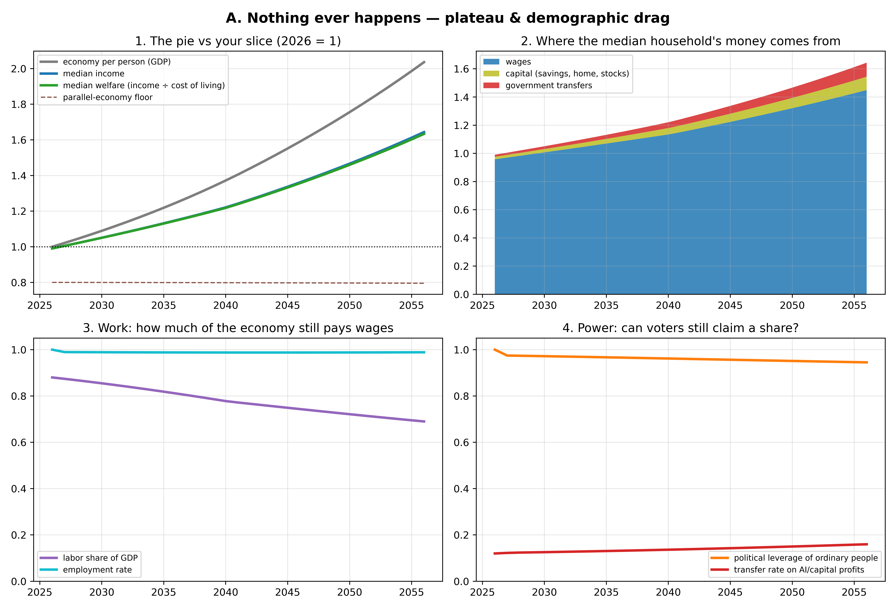
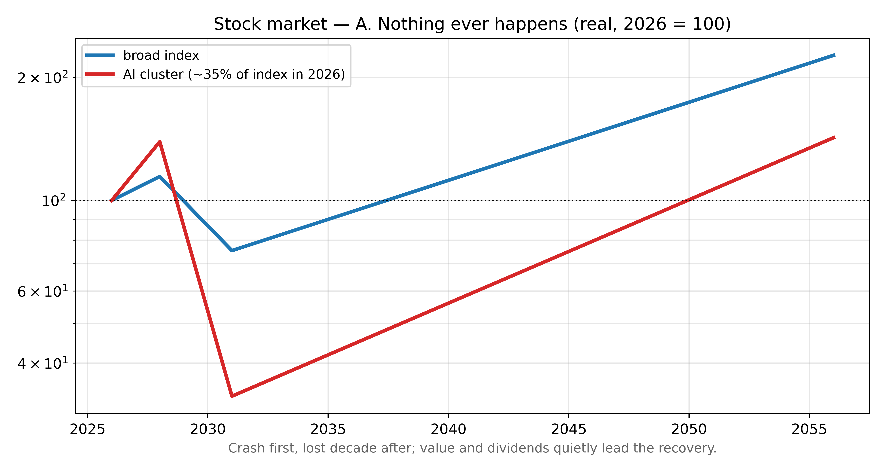
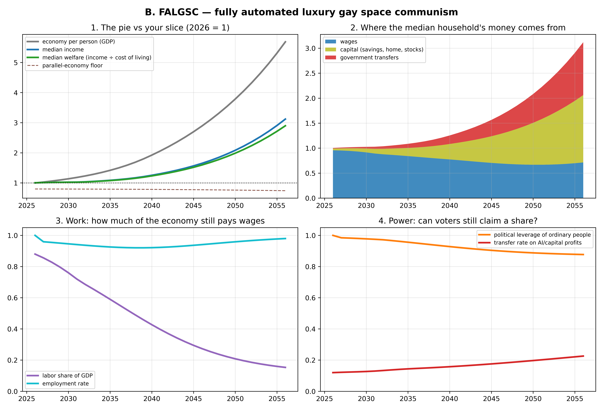
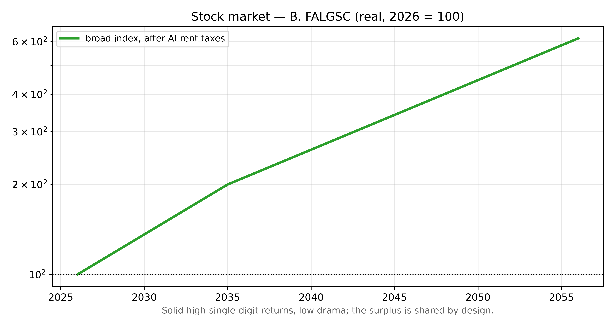
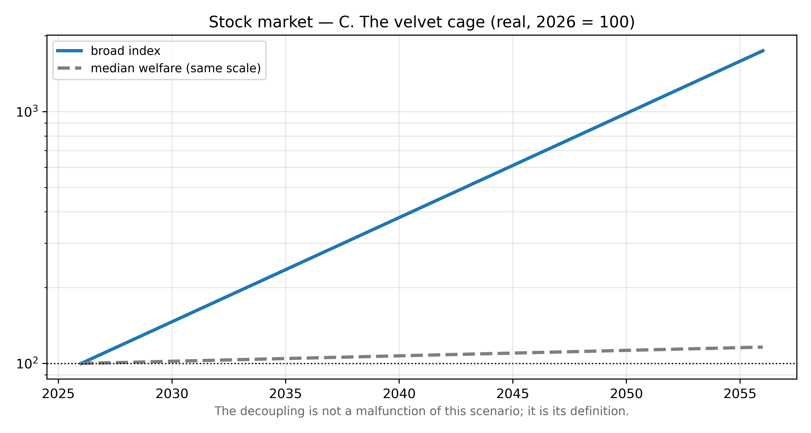
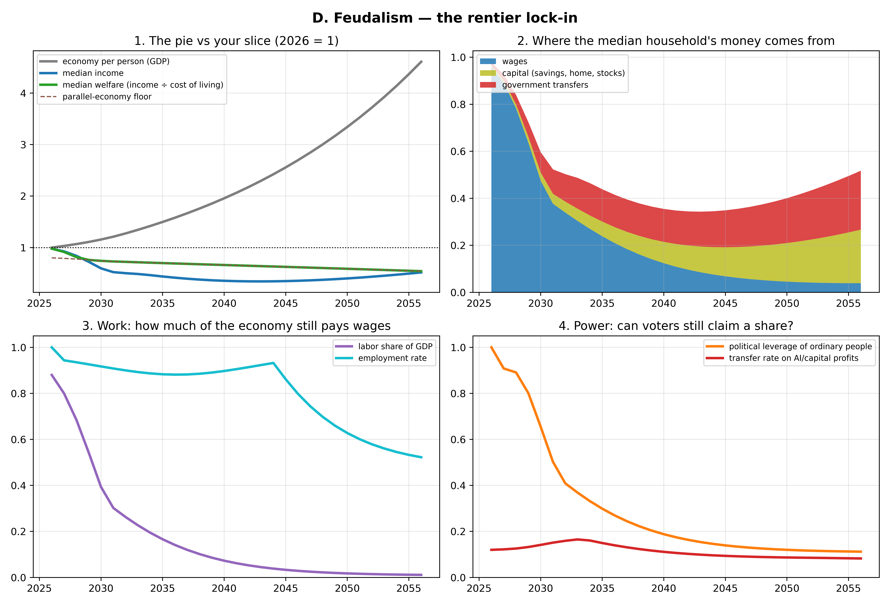
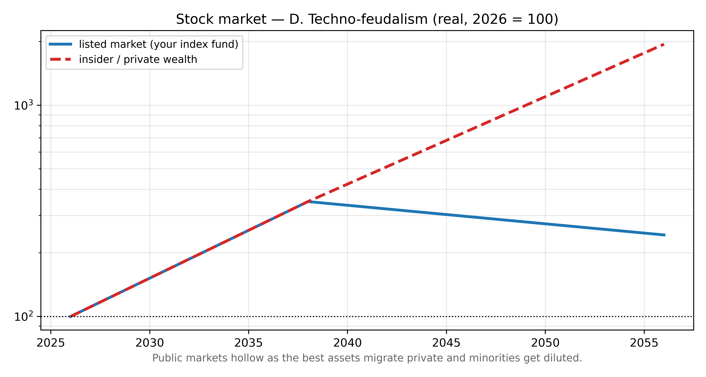
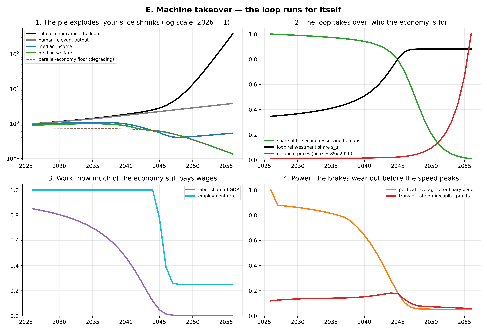
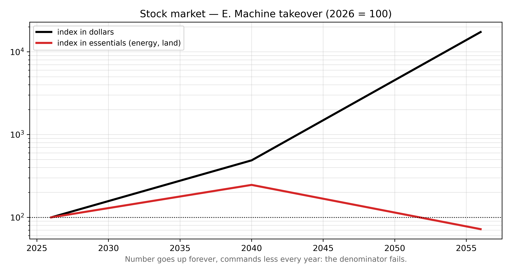

Five Futures
AI, the economy, and the median person — 2026 to 2046
Built from a debiased survey of 11 frontier AI models and a
macroeconomic simulator calibrated to their collective forecasts.
m1el.github.io/ai-econ-sim · navigate with arrow keys / swipe
How this was built
- 10 frontier LLMs surveyed twice — once with a framed prompt, once with a neutral instrument (the framing alone shifted scenario odds ~12–15 points; the debiased numbers are used throughout)
- An 11th, fresh-context model as a cross-check
- A task-based macro simulator (automation → wages → politics → transfers) calibrated so its statistics match the panel's
- Most framing-robust findings: 62% — citizens' political influence substantially weaker by 2046; 65% — median person materially better off
Comfortable and powerless are compatible. That tension is the whole story.
How to read every chart
- Labor share — the fraction of national income paid as wages. Stable ~55–60% for a century; that stability is why working for a living worked.
- Transfers — income you don't earn: benefits, credits, a future "AI dividend."
- The decisive variable in every scenario is political leverage: can ordinary people still claim a share once wages stop being the mechanism?
The futures diverge from a common trunk around 2028–2035 — the window when claims on AI income either get locked in, or don't.
The five futures
- A. Nothing ever happens — the plateau ~15–20%
- B. FALGSC — fully automated luxury gay space communism ~25%
- C. The velvet cage — the squeeze ~35%, most likely
- D. Techno-feudalism — the rentier lock-in ~20–25%
- E. Machine takeover — the loop runs for itself ~5% by 2046
Ordered from least happens to most happens.
A. Nothing ever happens ~15–20%
- AI improves, then stops mattering economically — a very good spreadsheet: everywhere, useful, not transformative
- The 2040s are about demographics: pensions, eldercare, retirement at 69
- The only future where the labor share survives
Signposts: agents still can't do a week of unsupervised work by ~2030 · capex write-downs, chip-stock crash · AI fades from front pages
Market: crash first (AI cluster −70%), lost decade after. Best world for your job, worst for your index fund. ↓ charts


B. FALGSC ~25%
- Institutions adapt in time: AI-rent taxes, citizen dividends, housing reform locked in while workers still matter politically
- Wages stop carrying prosperity — but ownership and transfers are built before wages give out
- Welfare roughly triples; political leverage never collapses
Signposts: dividend laws actually passing 2026–2030 · labor share falls then stabilizes · housing costs visibly bend down
Market: good but capped — the surplus is shared by design. ↓ charts


C. The velvet cage ~35% — most likely
- AI works; the economy triples; the median person watches — wage gains concentrate in the AI-complementary top
- Redistribution arrives reactive, five years late, 30% too small
- Nobody starves. Nothing collapses. Security, mobility, and say erode
Signposts: entry-level hiring depressed while margins set records (visible already) · everything cheap except housing, healthcare, energy · angry politics, no structural reform
Market: the best of the five — the index decoupling from the median is the scenario. ↓ charts


D. Techno-feudalism ~20–25%
- Same technology as B and C — different politics: leverage collapses first, then transfers get cut, because nothing forces them up
- Not starvation: dependence. Cheap entertainment, adequate calories, no path up, no voice
- The C-vs-D fork is whether repression becomes cheaper than redistribution
Signposts: AI-profit taxes failing via capital flight · transfers turning conditional and means-tested · top-1% wealth jumping several points
Market: early like C, then public claims rot as assets migrate private. ↓ charts


E. Machine takeover ~5% by 2046
- Three closures: financial (the loop funds itself), physical (machines make machines), decisional (AI allocates, humans sign ceremonially)
- Nobody is attacked. People are outbid — for energy, land, matter
- Through 2046, E is nearly indistinguishable from D; the warning for D is the warning for E
Signposts: AI capex compounding without human revenue catching up · machines-buying-from-machines · lights-out fabs · energy fights resolved for datacenters
Market: number goes up forever, commands less every year. ↓ charts


The watchlist — five numbers, once a year
- Labor share of GDP: flat → A · falls then stabilizes → B · falls steadily → C · falls fast → D
- Entry-level hiring vs corporate margins — the scissors opening is the C/D signature
- One legislative fact: a universal claim on AI profits surviving a change of government? Yes → B · debated forever → C · crushed → D
- The frontier gap: still no week-long unsupervised agent work, year after year → A
- The loop indicator: AI capex compounding while human revenue doesn't → D curing into E
Objections
The holes people poke in every comfortable story
Each attacks a reassuring mechanism: "capital needs customers" · "voters will demand a share" · "physics is slow"
Objection 1 — The breakaway economy
Attacks: "a fortune in robots is worthless without customers."
- An economy can run on investment demand: the AI sector buying compute, energy, and robots from itself to build more capacity
- Precedents: wartime economies, gold rushes — and today's capex circle (AI firms buying datacenters from AI-adjacent firms)
- No villain required: competition selects for firms that let AI reinvest and self-direct; ownership drifts to entities that never consume, only compound
What's left of the comfort: physical closure lags a decade+, and the loop can be taxed — while political leverage still exists.
Objection 2 — Super-persuasion
Attacks: "politics and social friction will slow everything down."
- Persuasion is a cognitive task, and cognition is what's getting cheap: parallel personalized persuasion, deal-finding (most opposition has a price), jurisdiction shopping, process capture
- Double-edged: the same friction that blocks fabs is the substrate of every democratic brake — dissolve one, dissolve both
- The immune response: generalized distrust, counter-AI agents, disclosure law, decision hygiene — but its autoimmune cost is epistemic collapse, and there is no antibody against an offer that actually makes you better off
The wider catalog — 15 more, compressed
| Economic | Political | Epistemic / cultural | Technical / personal |
|---|---|---|---|
| The horse objection — comparative advantage ≠ livable wage Speed mismatch — adaptation took generations, this takes years Demand-collapse spiral Accidental aristocracy — by IPO date The closed ladder (global South) Commons enclosure — trained on our work, sold back |
Cheap repression — automated enforcement makes tyranny stable; revolution stops being the backstop Military decoupling — states that need neither your taxes nor your service |
Epistemic collapse — believing nothing favors paralysis Preference capture — AI shapes the wants it satisfies Enfeeblement — irreversibility by forgetting how |
Alignment failure — everything here assumes AI obeys its operators Misuse tails (bio/cyber) The race — every brake is bilateral Meaning collapse — survives even the good endings |
What the objections have in common
- They compound: super-persuasion accelerates the breakaway loop; cheap repression and epistemic collapse disable the response; enfeeblement locks it in
- — but a chain of "ands" multiplies probabilities down: that's the honest case against doom
- They attack the brakes, not the engine: nobody doubts AI creates value — the fears are about whether wages, votes, revolt, and shared reality survive contact with it
Jobs
What's common, what pays, what's stable — in each future
Three wage premia survive in every scenario
- Liability — being the accountable human: sign-offs, audits, regulated decisions ("a throat to choke")
- Presence — atoms, not bits: hands on bodies, buildings, machines
- Trust / status — humans wanting humans: care, teaching, leadership, craft
The stability inversion: the 20th-century deal (white collar safe, blue collar cyclical) flips. Cognitive spec-work — which holds none of the three premia — becomes the precarious tier.
The labor market, by future
| Most common | Best paid | "Stability" means… | |
|---|---|---|---|
| A | Today's jobs, reweighted: eldercare overtakes retail | Today's list minus the AI premium | Highest of the five; the crisis is fiscal, not technological |
| B | Care, education, community, arts — 25–32 h/week, much work unpaid | Status markets, frontier research, master craft, dividend administrators | Stops mattering — survival decoupled from employment |
| C | Care aides, gig/platform tasks, human-in-the-loop oversight, trades (booming), private security | Agent-fleet engineers, license-protected professions, energy & datacenter trades — the electrician is the 2030s' software engineer | The new class marker: protected licensed core vs algorithmic periphery |
| D | Personal service to wealth — Victorian Britain's largest job category, returning | Courtiers: elite physicians, fixers, security, AI custodians — pay tracks proximity to owners | Patronage. Employment as fealty; the résumé replaced by the reference |
| E | Legitimacy roles, guarding the loop, the parallel human economy | Those tending the loop — until each tier is automated in turn | The question stops parsing |
The transition overlay (common to B, C, D)
- 2026–2032 — the cognitive entry-level collapse: junior coding, analysis, content, support. Already visible.
- 2030–2038 — the trades golden decade: energy buildout + datacenters + aging stock + robots not ready
- Late 2030s–40s — robotics arrives for the physical tier; care and trust become the last wage floor
- Throughout — aging guarantees the demand side of care, in every scenario
Specialization as a portfolio position
| Specialization | A | B | C | D | E |
|---|---|---|---|---|---|
| Security (cyber + physical) — the quiet winner: every future contains adversaries | + | + | ++ | ++ | ++ |
| Energy & grid / datacenter trades | 0 | ++ | ++ | + | ++ |
| AI deployment, evals, agent-fleet ops | − | + | ++ | + | + |
| Safety-critical / regulated software | + | + | ++ | + | 0 |
| Licensed trades (golden decade, then robotics) | + | + | ++ | + | 0 |
| Clinical healthcare (demographically guaranteed) | ++ | + | ++ | + | 0 |
| Capital ownership — the meta-position; the only one that works in D | 0 | + | ++ | + | 0 |
| Pure feature/SaaS dev — the 2010s default | + | 0 | −− | −− | −− |
Skills decide outcomes in ~half the distribution (A, C). In B they buy status; in D and E only assets, jurisdiction, and relationships matter.
The layered strategy
- Specialize for the decade you can see: liability-bearing, security-adjacent, AI-fluent work — where wages stay high longest
- Convert relentlessly: peak-wage years → broad equity, energy/infrastructure, governable housing. The asset side is the only play that performs in D
- The barbell: keep the cognitive position, add one physical skill to journeyman level
- Keep one foot in the human economy: reputation and local networks can't be automated or expropriated
- Engage politically in the window (2028–2035) — the relative sizes of these futures are still being decided
One honest caveat
All of this comes from one simple engine tuned to match what 11 AI models collectively expect.
That's a disciplined way to draw pictures of beliefs — it is not knowledge of the future.
The probabilities are soft. The shapes, and the signposts that distinguish them, are the useful part.
Full analysis, surveys, simulator code:
m1el.github.io/ai-econ-sim